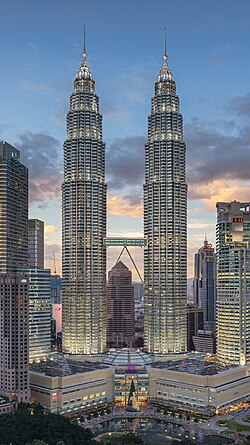
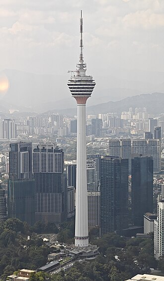
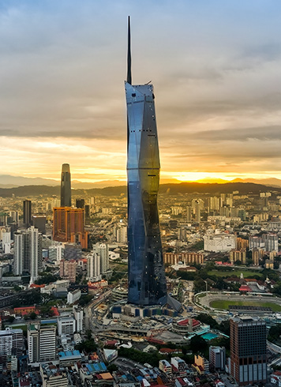

About Kuala Lumpur
Kuala Lumpur is the capital city of Malaysia. It is well known for its famous Petronas Twin Towers, the tallest twin towers in the world.
Quick Facts
Famous Landmarks
- Petronas Twin Towers
- Kuala Lumpur Tower (KL Tower)
- Merdeka 118
- Merdeka Square
Popular Attractions
- KLCC Park
- Aquaria KLCC
- Bukit Bintang
Gallery



Learn More
To discover more about Kuala Lumpur and other amazing destinations in Malaysia, visit the Malaysia Tourism Official Website .